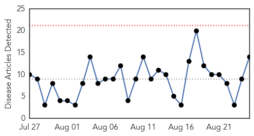
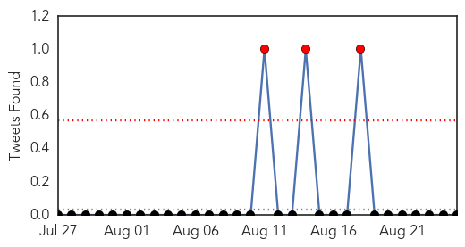
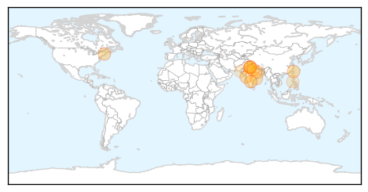
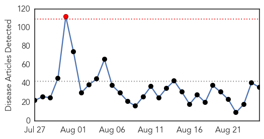
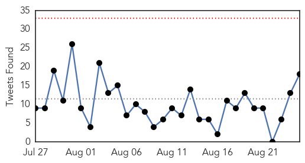

Dengue Fever
30-Day Web Trend
0 alerts, 0 warnings

30-Day Twitter Trend
3 alerts, 0 warnings

Article Locations
Article Confidences

Top Articles:
- 0.996
- Delhi sees 253 new dengue cases in just a week as number of victims hits 530
- 0.990
- Rayalaseema Under Dengue Attack
- 0.983
- Tainan hardest hit by dengue, records 4 deaths
- 0.981
- AIIMS to Start Serological Tests to Identify Prevalent Strains of Dengue Virus in India
- 0.972
- Five more test positive for dengue in Ghatampur
- 0.963
- Dengue cases in Negros Occidental on the rise
- 0.937
- Google Shutters Flu Trends Website, Will Send Data to Researchers
- 0.919
- Dengue mosquitos bite during the day and breed in clean, fresh water
- 0.915
- Speculations Arise Over the Prevention Strategies on Viral Diseases in Thane, Mumbai
- 0.868
- Chikungunya Panic in Ganjam
- 0.774
- Delhi dengue scare: Total 530 cases reported this year; 477 in August only
- 0.669
- Malaysia General Business Sports and Lifestyle News
- 0.600
- Tabuk City LGU launches community action vs dengue
- 0.559
- Anti-dengue spray begins in city
Top Tweets:
- 0.511
- Flavivirus news: 20 new dengue cases in Gurgaon in a week - Times of India: 20 new dengue cases... http://t.co/G3MKE0Zs6B pathogenposse
- 0.503
- ‘Rise in swine flu, dengue, gastro due to civic inaction’ - The Times of India http://t.co/rxQADttigB http://t.co/5qUNPeX9rq
Ebola
30-Day Web Trend
1 alerts, 0 warnings

30-Day Twitter Trend
0 alerts, 0 warnings

Article Locations

Article Confidences

Top Articles:
- 1.000
- Ebola epidemic under control
- 1.000
- Sierra Leone Releases Last Ebola Patient, Begins Countdown To Achieve 'Virus-Free' Status : LIFE : Tech Times
- 1.000
- Sierra Leone's last known Ebola patient leaves hospital in joyful ceremony
- 0.999
- Sierra Leone Releases Its Last Ebola Patient From Hospital
- 0.999
- WHO chief calls for urgent transformation of global epidemic response
- 0.999
- Sierra Leone discharges last Ebola patient
- 0.999
- Sierra Leone's last known Ebola patient leaves hospital
- 0.999
- Sierra Leone-Returned US Health Care Worker Under Ebola Observation
- 0.999
- Columbus takes health precautions, treats woman as a potential Ebola case after she reports symptoms
- 0.999
- Sierra Leone's last known Ebola patient leaves hospital
- 0.999
- After Panic, Man Tests Negative
- 0.998
- Ebola: 75% under five children died in Siera Leone-Report
- 0.998
- Woman being treated at Grant hospital as possible Ebola case
- 0.996
- Sierra Leone's last known Ebola patient is discharged singing and dancing
- 0.995
- Sierra Leone's last known Ebola patient is discharged singing and dancing
- 0.994
- Hospital staff in Sierra Leone celebrate the country's last Ebola patient being given all-clear
- 0.994
- Last Known Ebola Patient Released From Sierra Leone Hospital
- 0.991
- 101st Airborne recognized for Ebola fight
- 0.991
- Ebola survivors experience lingering ailments
- 0.989
- LIBERIA: 14 More Released From JFK Ebola Unit Three
- 0.987
- Sierra Leone's Last Ebola Patient Released, But Nation Not Yet 'Ebola-Free'
- 0.979
- The Rocky Mount Telegram
- 0.975
- Sierra Leone releases last known Ebola patient
- 0.970
- Guinea Extends Ebola Ring Vaccine Trial to Sierra Leone - Sierra Leone
- 0.936
- Ebola Response: WHO To Create Health Compliance Plan For Member Countries
- 0.927
- WHO Ebola IHR review committee outlines next steps
- 0.921
- Sierra Leone discharges last Ebola patient
- 0.911
- Sierra Leone discharges last known Ebola patient
- 0.891
- Woman monitored for contagious disease is not being tested for Ebola
- 0.854
- UNFPA Leads Sub Regional Efforts to Restore Maternal Health Services to Post Ebola Liberia - Liberia
- 0.840
- Church in Sierra Leone reacts to Ebola milestone Vatican Radio
- 0.785
- After 456 days of ebola in Salone…42 days countdown starts today « Awoko Newspaper
- 0.776
- A4 Briefs 082515
- 0.681
- News in Brief 24 August 2015 (PM)
- 0.652
- Work Underway to Better Respond to Global Epidemics
- 0.626
- Chatham House Prize 2015: In Conversation with Dr Joanne Liu of Médecins Sans Frontières
Top Tweets:
- 0.976
- Pitt, Drexel, and NIH team up to study persistence of Ebola virus in wastewater - Medical Xpress http://t.co/b23sR2fRfm ebola EVD
- 0.966
- Sierra Leone releases its last known Ebola patient - Junior College http://t.co/uIhYKzmoOG ebola EVD
- 0.958
- Grant Medical Center Monitoring Patient For Possible Ebola Symptoms - 10TV http://t.co/U4uFkGgc2g ebola EVD
- 0.954
- Sierra Leone's last known Ebola patient is discharged singing and dancing - Los Angeles Times http://t.co/ItvgHjMUcA ebola EVD
- 0.911
- 101st Airborne receiving award for work fighting Ebola virus - WLKY Louisville http://t.co/XHp3dVTxu0 ebola EVD
- 0.879
- Ebola vaccine for wild apes tested in New Iberia - The Daily Advertiser http://t.co/b2iuhg61Ps ebola EVD
- 0.878
- Adama Sankoh, Sierra Leone's last Ebola patient, lost her daughter to the virus. Today the 42-day countdown begins. http://t.co/skibYmoFTI
- 0.858
- 101st Airborne recognized for Ebola fight - The Courier-Journal http://t.co/52FrH9XTVo ebola EVD
- 0.858
- 101st Airborne recognized for Ebola fight - The Courier-Journal http://t.co/2pNQyfbe2w ebola EVD
- 0.845
- Ebola training helps improve health care worker safety - Business Insurance http://t.co/U5x77TviCz ebola EVD
- 0.825
- 101st Airborne receiving award for work fighting Ebola virus - WATE 6 On Your Side http://t.co/xOfWlcRxVh ebola EVD
- 0.822
- Expanding and accelerating response to calls for ambulances and burial teams for Sierra Leone’s Ebola Outbreak: http://t.co/TecIMaYnIL
- 0.820
- Woman being evaluated as possible Ebola case - Columbus Dispatch http://t.co/XDX3ycDMnt ebola EVD
- 0.797
- Pitt, Drexel, and NIH team up to study persistence of Ebola virus in wastewater - Medical Xpress http://t.co/YohCWvj2Jf
- 0.786
- RT: GOOD NEWS: Sierra Leone hospital discharges last known Ebola patient http://t.co/f8qg5iqGY9 http://t.…
- 0.738
- LIVE webcast from the Review Committee on the Role of Intl Health Regulations in the Ebola Outbreak & Response http://t.co/r2pHtMZL77
- 0.719
- Sierra Leone releases its last known Ebola patient - Junior College http://t.co/uiWPs3TXJ2
- 0.701
- Cautiously optimistic as last Ebola patient in Sierra Leone is out of hospital and 42-day countdown to being free of transmission begins.
- 0.677
- Ebola aftermath is ‘best chance’ to transform future epidemic response WHO http://t.co/rCVRjV9HzQ
- 0.675
- Sierra Leone's last known Ebola patient is discharged singing and dancing - Los Angeles Times http://t.co/lKrUTIwrUp
- 0.657
- RT: Q1: Let’s start w/ comms during recent Ebola outbreak. What worked and what didn’t? TalkHealthComms
- 0.598
- RT: READ: Joy as Sierra Leone's last Ebola patient ends treatment http://t.co/2AZBX3ZOMt http://t.co/Fh2PrRQPUQ
- 0.562
- Committee reviewing International Health Regulations in wake of Ebola crisis hopes to present change recommendations next May. IHR
- 0.554
- RT: What will it take 2 help Sierra Leone rebuild its healthcare systm after the Ebola crisis? @THOMASABDUL investigates http://t…
- 0.512
- Liberia SituationReport on Ebola - 19 August 2015 https://t.co/k2av4LKufa via
- 0.511
- RT: Sierra Leone discharges last Ebola patient, after 15 months & nearly 4,000 deaths. http://t.co/SoP5ttqQqk http://t.co/n1cWW3…